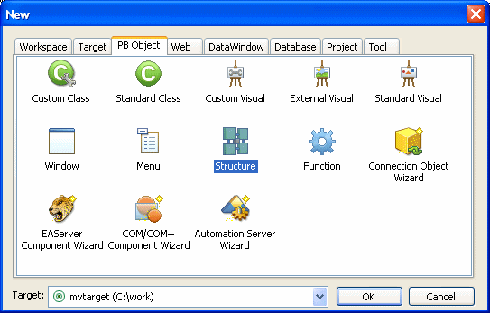

This section describes how to build a user object from scratch. You use this technique to create user objects that are not based on existing user objects.
 To create a new user object:
To create a new user object:
Open the New dialog box.
On PB Object tab page, select the kind of user object you want to create.
The five user object choices display at the top of the tab page:

Click OK.
What you do next depends on the type of user object you selected. For all user objects except Standard Class and Standard Visual, the User Object painter opens.
The remainder of this section describes how to build each type of user object.
On the PB Object tab page of the New dialog box, if you select Custom Class and click OK, the User Object painter for custom class user objects opens.
 To build the custom class user object:
To build the custom class user object:
Declare functions, structures, or variables you need for the user object.
Create and compile scripts for the user object.
Custom class user objects have built-in constructor and destructor events.
Save the user object.
You can create custom class user objects that are autoinstantiated, which provides you with the ability to define methods.
Autoinstantiated user objects do not require explicit CREATE or DESTROY statements when you use them. They are instantiated when you call them in a script and destroyed automatically.
 To define an autoinstantiated custom class user
object:
To define an autoinstantiated custom class user
object:
In the Properties view, select the AutoInstantiate check box.
For more information about autoinstantiation, see the PowerScript Reference.
In the Properties view, if you specify an EAServer project that will be used to generate an EAServer component (a custom class user object with the characteristics needed for deployment to EAServer), live editing is enabled. When live editing is enabled in the User Object painter, PowerBuilder builds the project for an EAServer component each time you save the user object.
For information about EAServer components and live editing, see Application Techniques .
On the PB Object tab page of the New dialog box, if you select Standard Class and click OK, the Select Standard Class Type dialog box displays.
 To build the standard class user object:
To build the standard class user object:
In the Select Standard Class Type dialog box, select the built-in system object that you want your user object to inherit from and click OK.
Declare functions, structures, or variables you need for the user object.
 For a list of properties and functions Use the Browser to list the built-in properties inherited
from the selected system object. Use the Function List view or the
Browser to list the functions inherited from the selected system
object.
For a list of properties and functions Use the Browser to list the built-in properties inherited
from the selected system object. Use the Function List view or the
Browser to list the functions inherited from the selected system
object.
Declare any user events needed for the user object.
For information about user events, see "Communicating between a window and a user object ".
In the Script view, create and compile scripts for the user object.
Class user objects have built-in constructor and destructor events.
Save the user object.
On the PB Object tab page of the New dialog box, if you select Custom Visual and click OK, the User Object painter for custom visual user objects opens. It looks like the Window painter, but the empty box that displays in the Layout view is the new custom visual user object.
Building a custom visual user object is similar to building a window, described in Chapter 11, "Working with Windows." The views available in the Window painter and the User Object painter for custom visual user objects are the same.
 To build the custom visual user object:
To build the custom visual user object:
Place the controls you want in the custom visual user object.
Work with the custom visual user object as you would with a window in the Window painter:
Save the user object.
On the PB Object tab page of the New dialog box, if you select External Visual and click OK, the User Object painter for external visual user objects opens.
 To build an external visual user object:
To build an external visual user object:
In the Properties view, click the Browse button next to the LibraryName box.
In the Select Custom Control DLL dialog box, select the DLL that defines the user object and click OK.
In the Properties view, enter the following information, as necessary, and click OK:
Declare any functions, structures, or variables you need to declare for the user object.
You can declare functions, structures, and variables for the user object in the Script view. Information about functions is usually provided by the vendor of the purchased DLL.
Declare any needed events for the user object.
For information about user events, see "Communicating between a window and a user object ".
In the Script view, create and compile the scripts for the user object.
For more information on events associated with external visual user objects, see "Events in user objects".
Save the user object.
On the PB Object tab page of the New dialog box, if you select Standard Visual and click OK, the Select Standard Visual Type dialog box displays.
 To build a standard visual user object:
To build a standard visual user object:
In the Select Standard Visual Type dialog box, select the PowerBuilder control you want to use to build your standard visual user object and click OK.
The selected control displays in the workspace. Your visual user object will have the properties and events associated with the PowerBuilder control you are modifying.
Work with the control as you do in the Window painter:
Save the user object.
When you build a user object, you can write scripts for any event associated with that user object.
Most custom class user objects have only constructor and destructor events. Activate and deactivate events are created for the EAServer and COM+ custom class user objects that you create using the wizards at the bottom of the PB Object page in the New dialog box. For more information, see Application Techniques .
Standard class user objects have the same events as the PowerBuilder system object from which they inherit.
Standard visual user objects have the same events as the PowerBuilder control from which they inherit. Custom and external visual user objects have a common set of events.
For more about drag and drop, see Application Techniques .
 To save a user object:
To save a user object:
In the User Object painter, select File>Save from the menu bar or click the Save button in the painter bar.
If you have previously saved the user object, PowerBuilder saves the new version in the same library and returns you to the User Object painter.
If you have not previously saved the user object, PowerBuilder displays the Save User Object dialog box.
Enter a name in the User Objects box.
For naming considerations, see "Naming the user object".
Enter comments to describe the user object.
These display in the Select User Object dialog box and in the Library painter, and will document the purpose of the user object.
Specify the library in which to save the user object.
To make a user object available to all applications, save it in a common library and include the library in the library search path for each application.
Click OK to save the user object.
 Validation for server components In the User Object painter for a custom class user object,
the Design menu has EAServer Validation
and COM/COM+ Validation menu items. If you are saving
an EAServer component or
a COM/COM+ component and you check the validation
menu item for the component to enable validation, a check displays
next to the menu item. When you save the object, you might see some error
messages.
Validation for server components In the User Object painter for a custom class user object,
the Design menu has EAServer Validation
and COM/COM+ Validation menu items. If you are saving
an EAServer component or
a COM/COM+ component and you check the validation
menu item for the component to enable validation, a check displays
next to the menu item. When you save the object, you might see some error
messages.
A user object name can be any valid PowerBuilder identifier up to 40 characters. For information about PowerBuilder identifiers, see the PowerScript Reference .
You should adopt naming conventions to make it easy to understand a user object's type and purpose.
One convention you could follow is to use u_ as the prefix for visual user objects and n_ as the prefix for class (nonvisual) user objects. For standard classes, include the standard prefix for the object or control from which the class inherits in the name. For external user objects, include ex_ in the name, and for custom class user objects, include cst_ in the name.
Table 15-3 shows some examples of this convention.
For a list of naming conventions, see "Naming conventions" in Chapter 5, "Working with Targets."